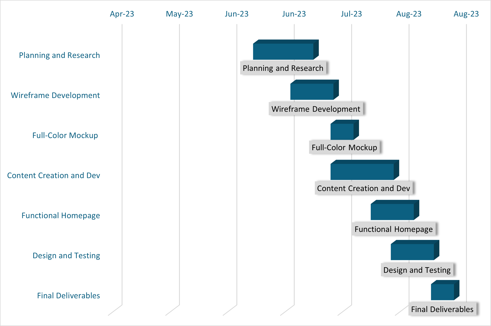

Overview of Project
This project aims to develop a new website for Cratis, a company specializing in remote meat thermometers. The website will serve as an online platform for showcasing and selling the thermometer, providing a seamless e-commerce experience for customers. The current website is outdated and lacks user-friendly features, resulting in subpar user experience and limited online visibility for the product. The proposed website will address these challenges by implementing a user-centric design, e-commerce functionality, mobile responsiveness, search engine optimization, and social media integration.
Objectives of Project
The main objective is to enhance the user experience by creating a modern and intuitive website design. This will in turn lead to the minor objectives of increasing customer traffic to the website through improved online visibility and search engine optimization. As well as driving sales conversions by implementing robust e-commerce functionality. The website will also be optimized for various devices to ensure a seamless browsing experience for users.
Target Audience
The target audience for the Cratis remote meat thermometer website includes smoking and barbecue enthusiasts who seek precise temperature control for achieving perfectly cooked meats. These users value convenience and accuracy in their cooking process. Tech-savvy cooking enthusiasts who appreciate innovative solutions and tools to enhance their culinary experience. Gift buyers looking for high-quality and unique cooking-related products. These individuals are passionate about cooking, value the benefits offered by a remote meat thermometer, and are willing to invest in high-quality tools that enhance their cooking experience. The website will cater to their specific requirements, providing a seamless user experience and attracting a loyal customer base.
Project Timeline
| Week | Tasks | Description |
|---|---|---|
| Week 1-3 | Project Planning and Research | During these initial weeks, research on the target audience, competitors, and industry trends will be done. This will help gain valuable insights and inform design decisions. Additionally, a detailed project plan, outlining the specific tasks, milestones, and resources required for each phase of the project will be created. |
| Week 4 | Wireframe Development | In the fourth week, the focus will be on creating and delivering wireframes for the website. Wireframes are low-fidelity visual representations of the website's layout and structure. This stage maps out the key sections, navigation flow, and overall user interface, ensuring a clear and intuitive user experience. |
| Week 5 | Full-Color Mockup and Prototype | Building upon the wireframes, the development of a full-color mockup and a functional prototype of the website will be delivered. The mockup will provide a realistic visual representation of the website design, including the color scheme, typography, and graphical elements. The prototype will enable the simulation of user interactions and validate the website's functionality. |
| Week 6-7 | Content Creation and Development | During these weeks, the focus will be on creating and refining the website's content. This includes writing compelling product descriptions, informative blog posts, and engaging landing page copy. Development of the necessary graphics, images, and media assets to enhance the website’s visual appeal will be completed. |
| Week 8 | Homepage Creation | In the eighth week, efforts will be focused on designing and developing the homepage of the website. The homepage plays a crucial role in capturing the attention of visitors, conveying the brand message, and highlighting the key features and benefits of the remote meat thermometer. It will showcase the product prominently and entice users to explore further. |
| Week 9 | Iterative Design and Testing | During this phase, iterative design improvements and usability testing to ensure a seamless user experience will be conducted. Gathering feedback from users or a test audience will help to identify any areas that need refinement and make necessary adjustments to enhance the website's usability and functionality. |
| Week 10 | Final Deliverables | In the final week, the focus will be on completing the remaining tasks, conducting a final review, and preparing the website for launch. This includes optimizing the website for different devices, performing cross-browser compatibility testing, and ensuring all features and functionalities are working as intended. Documentation for future maintenance that provides the client with the final deliverables will be created and delivered. |